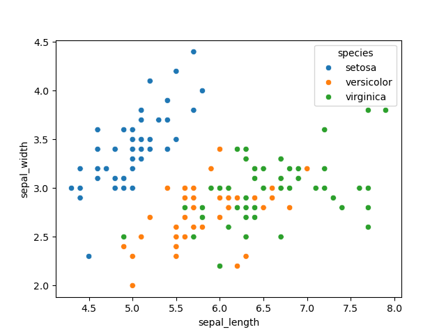

Scratch
This is an example of using org babel as a jupyter replacement!
Notebook
import pandas as pd
import seaborn as sns
import matplotlib.pyplot as plt
df = sns.load_dataset("iris")
print("Here's some data!")
print(df)
sns.scatterplot(data=df, x="sepal_length", y="sepal_width", hue="species")
plt.show()
Here’s some data!
| idx | sepal_length | sepal_width | petal_length | petal_width | species |
|---|---|---|---|---|---|
| 0 | 5.1 | 3.5 | 1.4 | 0.2 | setosa |
| 1 | 4.9 | 3.0 | 1.4 | 0.2 | setosa |
| 2 | 4.7 | 3.2 | 1.3 | 0.2 | setosa |
| 3 | 4.6 | 3.1 | 1.5 | 0.2 | setosa |
| 4 | 5.0 | 3.6 | 1.4 | 0.2 | setosa |
| 5 | 5.4 | 3.9 | 1.7 | 0.4 | setosa |
| 6 | 4.6 | 3.4 | 1.4 | 0.3 | setosa |
| 7 | 5.0 | 3.4 | 1.5 | 0.2 | setosa |
| 8 | 4.4 | 2.9 | 1.4 | 0.2 | setosa |
| 9 | 4.9 | 3.1 | 1.5 | 0.1 | setosa |
| 10 | 5.4 | 3.7 | 1.5 | 0.2 | setosa |
| 11 | 4.8 | 3.4 | 1.6 | 0.2 | setosa |
| 12 | 4.8 | 3.0 | 1.4 | 0.1 | setosa |
| 13 | 4.3 | 3.0 | 1.1 | 0.1 | setosa |
| 14 | 5.8 | 4.0 | 1.2 | 0.2 | setosa |
| 15 | 5.7 | 4.4 | 1.5 | 0.4 | setosa |
| 16 | 5.4 | 3.9 | 1.3 | 0.4 | setosa |
| 17 | 5.1 | 3.5 | 1.4 | 0.3 | setosa |
| 18 | 5.7 | 3.8 | 1.7 | 0.3 | setosa |
| 19 | 5.1 | 3.8 | 1.5 | 0.3 | setosa |

Cell Timer: 0:00:01
import numpy as np
def iterate_values(values, iterations=10):
# Convert the input list to a NumPy array
values = np.array(values)
# Initialize the sum of squares for the first iteration
previous_sum_of_squares = np.sum(values ** 2)
# Perform the iteration process
for i in range(iterations):
# Compute the difference between consecutive elements using np.roll
values = values - np.roll(values, -1)
# Calculate the current sum of squares
current_sum_of_squares = np.sum(values ** 2)
# Print the current values, sum of squares, and ratio to previous sum
if i == 0:
print(f"Iteration {i+1}: {values}, Sum of squares: {current_sum_of_squares}")
else:
ratio = current_sum_of_squares / previous_sum_of_squares
print(f"Iteration {i+1}: {values}, Sum of squares: {current_sum_of_squares}, Ratio to previous: {ratio}")
# Update previous_sum_of_squares for the next iteration
previous_sum_of_squares = current_sum_of_squares
return values
# Example usage for k=4
initial_values = [0, 0, 0,5] # Replace with any integers
final_values = iterate_values(initial_values, iterations=20)
print("Final values after iterations:", final_values)
Iteration 1: [ 0 0 -5 5], Sum of squares: 50
Iteration 2: [ 0 5 -10 5], Sum of squares: 150, Ratio to previous: 3.0
Iteration 3: [ -5 15 -15 5], Sum of squares: 500, Ratio to previous: 3.3333333333333335
Iteration 4: [-20 30 -20 10], Sum of squares: 1800, Ratio to previous: 3.6
Iteration 5: [-50 50 -30 30], Sum of squares: 6800, Ratio to previous: 3.7777777777777777
Iteration 6: [-100 80 -60 80], Sum of squares: 26400, Ratio to previous: 3.8823529411764706
Iteration 7: [-180 140 -140 180], Sum of squares: 104000, Ratio to previous: 3.9393939393939394
Iteration 8: [-320 280 -320 360], Sum of squares: 412800, Ratio to previous: 3.9692307692307693
Iteration 9: [-600 600 -680 680], Sum of squares: 1644800, Ratio to previous: 3.9844961240310077
Iteration 10: [-1200 1280 -1360 1280], Sum of squares: 6566400, Ratio to previous: 3.992217898832685
Iteration 11: [-2480 2640 -2640 2480], Sum of squares: 26240000, Ratio to previous: 3.996101364522417
Iteration 12: [-5120 5280 -5120 4960], Sum of squares: 104908800, Ratio to previous: 3.998048780487805
Iteration 13: [-10400 10400 -10080 10080], Sum of squares: 419532800, Ratio to previous: 3.9990239141044412
Iteration 14: [-20800 20480 -20160 20480], Sum of squares: 1677926400, Ratio to previous: 3.999511837930193
Iteration 15: [-41280 40640 -40640 41280], Sum of squares: 6711296000, Ratio to previous: 3.999755889173685
Iteration 16: [-81920 81280 -81920 82560], Sum of squares: 26844364800, Ratio to previous: 3.999877937137626
Iteration 17: [-163200 163200 -164480 164480], Sum of squares: 107375820800, Ratio to previous: 3.9999389667063383
Iteration 18: [-326400 327680 -328960 327680], Sum of squares: 429500006400, Ratio to previous: 3.999969482887529
Iteration 19: [-654080 656640 -656640 654080], Sum of squares: 1717993472000, Ratio to previous: 3.999984741327352
Iteration 20: [-1310720 1313280 -1310720 1308160], Sum of squares: 6871960780800, Ratio to previous: 3.9999923706345726
Final values after iterations:
[-1310720 1313280 -1310720 1308160]
Cell Timer: 0:00:00